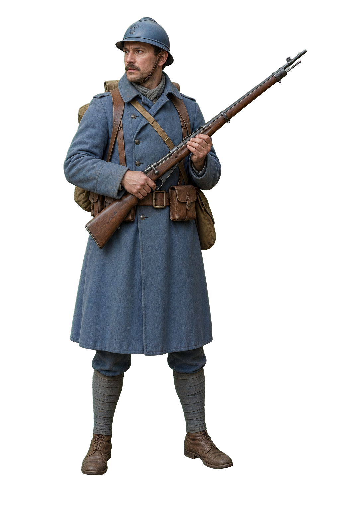

行动指引
向金色目标标记移动。
VERDUN
沃堡守备战
目标
夺回 · 弹药库
武器库
第一人称

生命
100
勒贝尔步枪
5
/
25
可射击
5 发 · 190 发/分
雨水敲击着沃堡的石墙。
仰角
携行武器
选择主武器
×
勒贝尔 M1886
5 发弹仓 · 190 发/分 · 高伤害
绍沙轻机枪
20 发弹匣 · 420 发/分 · 压制火力
贝蒂埃卡宾枪
8 发弹仓 · 330 发/分 · 均衡
射击
装填
1916 · 凡尔登
沃堡守备战
暴雨后的堡垒甬道已被敌军渗透。夺回弹药库、肃清西侧甬道，再守住最后一道铁门。
01 夺回弹药库
02 肃清西侧甬道
03 守住铁门
移动
WASD / 左侧摇杆
瞄准与射击
鼠标转向 + 左键 / 右侧滑动 + 射击
J / L 微调左右，Q / E 微调仰角
进入沃堡
任务结束
沃堡得以守住
重新部署